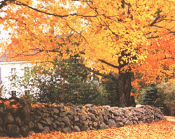
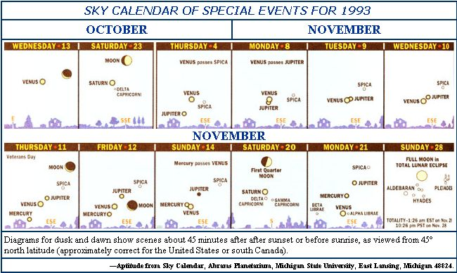
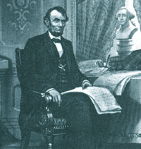
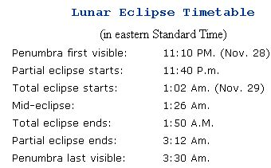
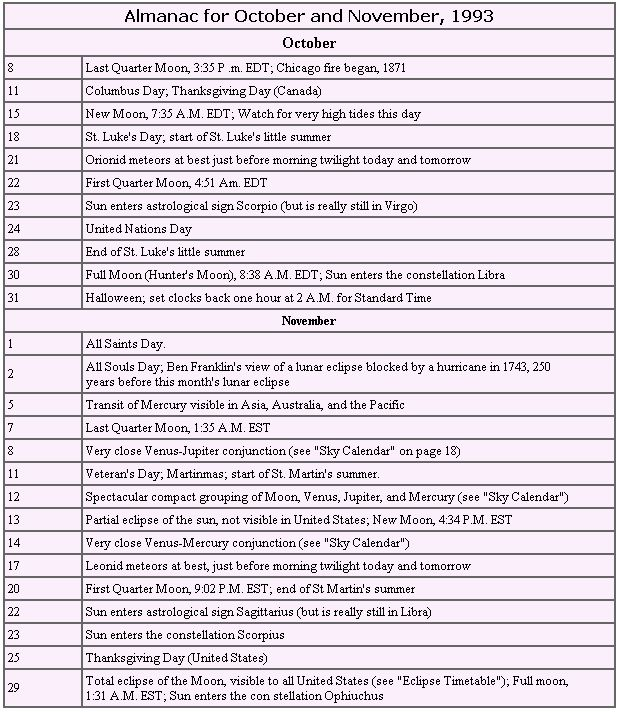

SEASONS
We all knew it has something to do with warm spells; now find out the facts for sure .
Three upcoming events in October and November are so intriguing that I won't apologize for allowing them to dominate the following paragraphs. The first is this November's total eclipse of the Moon-an eclipse for the entire country to finally enjoy. The others are the annual (and ever-popular) changing of leaf color and the somewhat confusing period known as Indian summer.
How many of you witnessed the total lunar eclipse of last December or the one last June? Unfortunately for those in the West, the former was visible in its entirety only in eastern parts of the United States. The June eclipse, on the other hand, was an extremely West-oriented affair (only Hawaii got a full serving of it). So I tell you with great delight that on the night of November 28, 1993, the entire United States will finally get a chance to see a third-and probably very different looking-total eclipse of the Moon.
I saw last December's eclipse and know that it was one of the rare, very dark lunar eclipses that occurs after the Earth's atmosphere is clogged with ash or sulfuric acid haze from a major volcanic eruption. (You'll probably remember that this was the handiwork of the June 1991 blast of Mt. Pinatubo.) By the time the June 1993 eclipse occurred, the Pinatubo haze had significantly abated. But because the Moon passed more centrally through the Earth's shadow, the eclipse was still not very light.
That's why I'm so eager to see November's eclipse; the volcanic veil should be even further thinned, and the Moon will be crossing closer to the southern edge of the Earth's shadow, or "umbra:' It's more than likely the Moon will remain easily visible; in fact, it will probably shine a cheerful orange or pink-with perhaps a few eerie dark patches-throughout the eclipse.
The accompanying timetable lists the times at which the most dramatic effects of the eclipse can be seen. The light shading of the "penumbra," or peripheral shadow of the Earth, is usually not detectable until it's about halfway across the Moon's face. Every total eclipse of the Moon is unique, so this is one event you shouldn't miss. Hopefully, skies won't be so overcast where you live that they hide the Moon on the big night. Unfortunately, if you miss this one, you're out of luck-no total lunar eclipse will be visible from anywhere in the world again until April 4, 1996, when only the eastern United States will get a look.
Other interesting astronomical events in November include the striking gatherings of the planets, Moon, and stars (see the "Sky Calendar" on page 18 and the Almanac on BELOW). November's partial solar eclipse is only visible in the extremely southern part of the Earth. But on November 6, Hawaiian readers will get a chance to behold the rare sight of Mercury passing across the face of the Sun-as long as they're careful to observe the Sun safely. (Refer to a journal, such as November's Sky & Telescope, for viewing directions.)
Returning our gaze back to Earth, we find October colors that even the most brilliantly hued lunar eclipse can't match (although I did see purple briefly in last December's eclipse). "October is the month for painted leaves," says Thoreau in his little-read essay "Autumnal Tints" (which I highly recommend). Of course, you'll find that even the great Thoreau cannot capture all of the complexity, majesty, and heart-piercing poignancy of fall foliage.
I'll be brief and only mention a few observations about autumn's leaf-color changes. One little-known fact is that all of the vivid hues of these leaves-the reds, oranges, yellows, and purples-are actually present in leaves year-round. But it is only in autumn that the leaves lose chloro phyll, the chemical that produces the dominant green color, permitting the hidden hues to be revealed. Also interesting is how factors such as tree age, location in direct sunlight, and anything else you can think of, decide which trees (or parts of a tree) start changing color first. I'd be glad to hear from any reader who has comments about this, lunar eclipses, or any other subject in this column. Write me at RD #2, Box 468, Millville, NJ 08332.
When the term "Indian summer" resonates in our minds, most know only that it has something to do with warm spells in October. But, as weather-watcher and New England folklorist Eric Sloane once declared, "...no one is completely certain as to its exact date, its origin, or even what the term implies:'
Many authorities believe Indian summer is the first spell of decidedly warm, calm weather after the year's first frost. If we accept this definition, of course, Indian summer falls on different dates at different places and in different years, making it really hard to keep track of. But there have also been attempts to identify this "second summer" or "fifth season" with one of two periods that are reputed to have this kind of weather every year on the same dates.
In Europe, for example, there are two versions of Indian summer: "St. Luke's Little Summer" and "St. Martin's Summer." The former runs from St. Luke's Day on October 18 through October 28. (St. Luke is the author of one of the Bible's four Gospels about Christ's life.) The latter runs from St. Martin's Day (Martinmas) on November 11 through November 20. St. Martin was an early bishop who died in A.D. 397. This active missionary in Gaul gained a reputation as one of the greatest wonder workers in his time. In the United States, of course, Martinmas is overshadowed by Veteran's Day, the day on which World War I ended.
PROPER CREDIT: We have President Abraham Lincoln to thank for our annual turkey feasts.
A less famous period-invoked presumably when the appropriate weather occurred between St. Luke's and St. Martin's summers-is Allhallown Summer, named for All Hallows' Day on November 1.
But now comes the most delightful complication of all. St. Martin's summer was once known as "goose summer," probably because, in parts of Europe, November is regarded as the time when geese are in season. For instance, in German, November (spelled the same as in English) means "geese month." But the term "goose summer" gave rise to a word that describes the delicate strands of spider web that are common in many lands during spells of warm, calm weather in autumn: gossamer. (The transition from goose summer to gossamer may have even included a stage in which there was a "gauze summer.") I first learned of the connection between gossamer and Indian summer, and about the aerial feats of tiny spiders, in Eric Sloane's Look at the Sky (Hawthorn Books Inc., 1970). You can read about other interesting twists in the etymology of gossamer in the Oxford English Dictionary.
But what about the origin of the term "Indian summer" itself? One leading theory holds that the periods of warm, still weather in autumn were the times when Native Americans began their fall hunting trips. Another theory claims that the haze characteristic of these periods was at first thought to be caused by, or at least to resemble, the smoke from Native American campfires in the hills.
Although many parts of the United States have spells of such weather, the most common and exemplary episodes of Indian summer occur in the region where the term first appeared, in records written during the Revolutionary War: the Mid-Atlantic states and the Ohio Valley. Indian summer in this region is generally caused by high-pressure systems that frequently stall near West Virginia at this time of year.
By the way, some authorities maintain that Indian summer occurs not after the first frost but after the first freeze-and that the intermediary spell of freezing weather is known as "squaw winter."
We are often reminded that the American holiday of Thanksgiving got its start with the Pilgrims and Native Americans in 1621. But few people know that we probably never would have had this holiday were it not for Abraham Lincoln, the Civil War, and a woman named Sarah Josepha Hale.
There was no regular yearly celebration of Thanksgiving for almost 250 years after the Pilgrim's first feast (despite what you may have learned in second grade). It was Sarah Josepha Hale who, from 1821 until 1863 (42 years!), wrote editorials in women's magazines arguing for a national celebration of Thanksgiving on a single day each year. Her editorial in September 1863, published in the midst of the Civil War, sparked the interest of Abraham Lincoln, who thought it was an excellent idea that would bring together the divided country. On October 3, 1863, Lincoln decreed that the last Thursday in each November should be a national Thanksgiving Day. So, before you take that first bite of fresh turkey this Thanksgiving, take a second to give thanks to these two.
|
 |
 |
 |
|
 |
 |
|